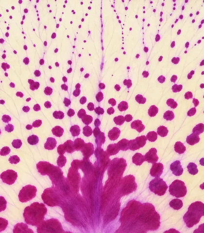
QUELEC · SUBLIMACIÓN
Artes de las flores
Artes de sublimación para los pétalos, el tallo y las hojas de bore de la flor central y para los pétalos de las flores pequeñas.
Pétalos de la flor central
Lienzo de 350 × 400 cm · 20.669 × 23.622 px · 150 ppp · sRGB

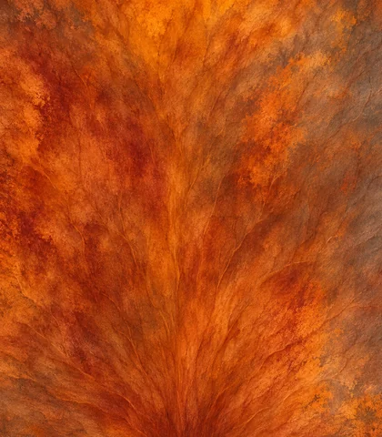

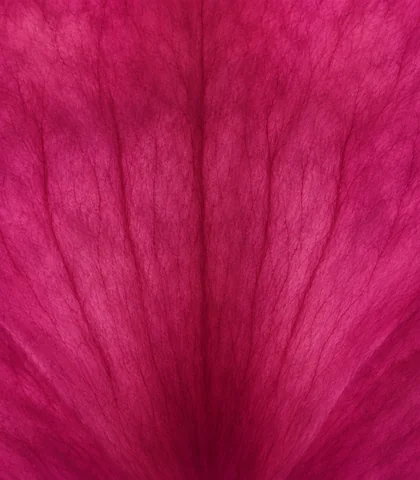

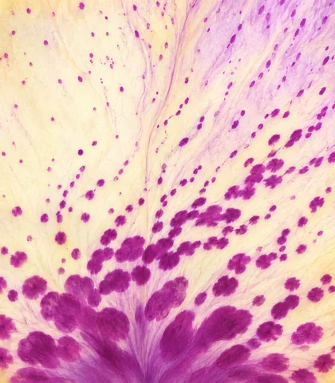

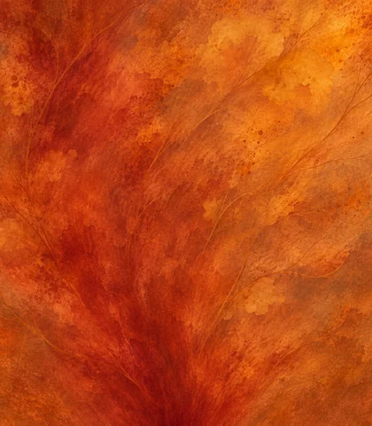

Tallo y hojas de bore
Gira la flor y alterna los dos tallos para compararlos con las hojas desplegadas.
Ver la flor en 3D aquí
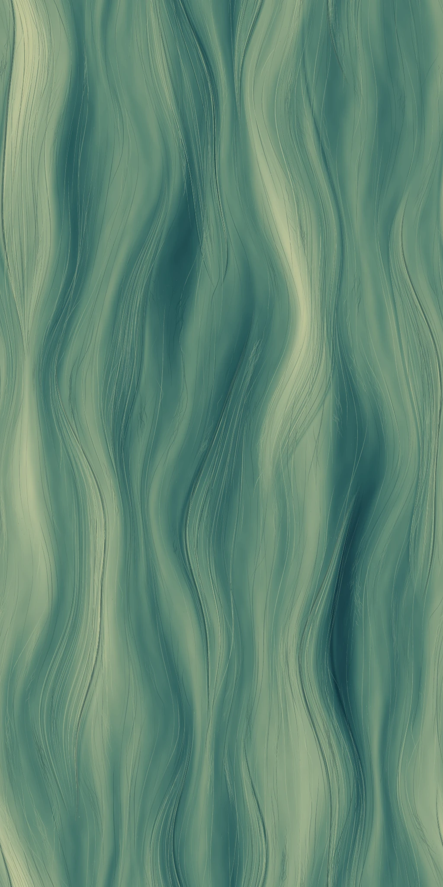
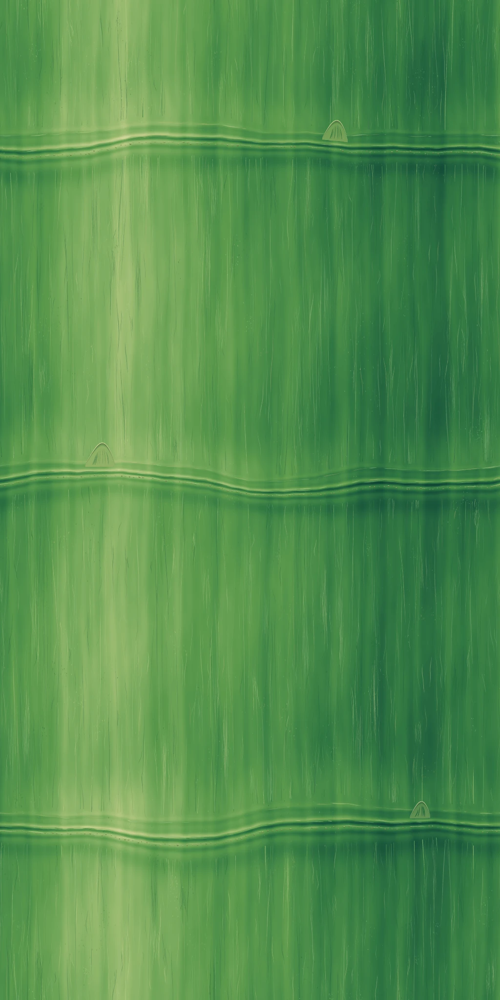

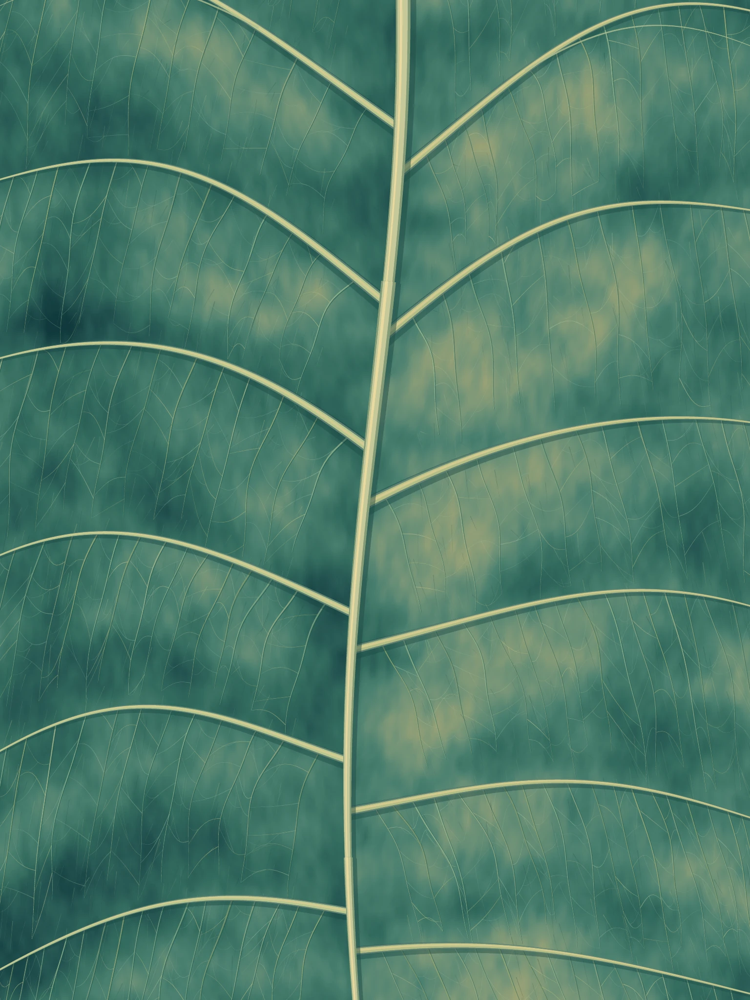

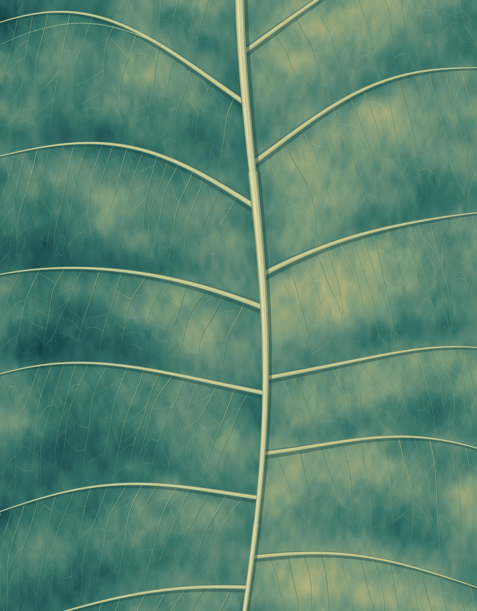

Archivos para impresión
Flores pequeñas
Ver el modelo 3D y su mecanismo ↗
Lienzo de 203,2 × 203,2 cm · 12.000 × 12.000 px · 150 ppp · sRGB
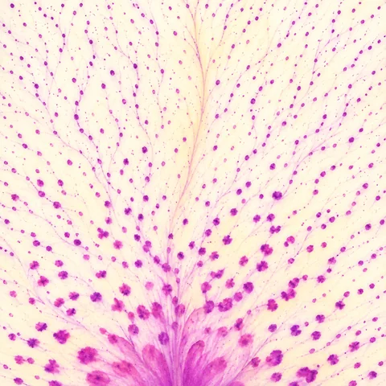

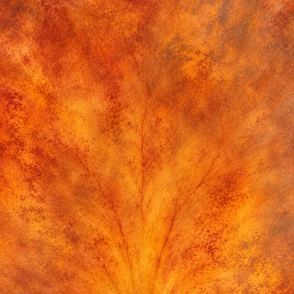

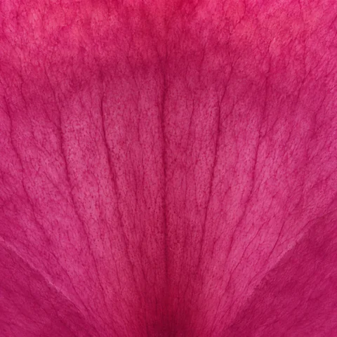